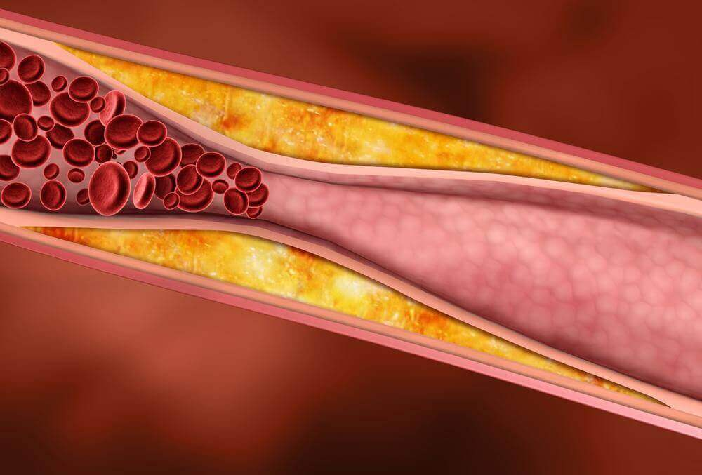

Mit Fürsorge um Menschen. Der weltweit berühmte Kardiologe Alexander Schmidt erklärte, warum Menschen mit Bluthochdruck keine Chance haben, gesund zu werden.
Alexander Schmidt ist ein ausgezeichneter Facharzt, Gewinner des Gairdner Foundation International Awards und langjähriger Mitarbeiter einer Klinik für Herz-Kreislauf-Erkrankungen.

Alexander Schmidt ist ein ungewöhnlicher Kardiologe, der bescheiden lebt und immer versucht, Menschen zu helfen. In diesem Winter reinigte der weltberühmte Kardiologe selbst den Schnee in der Nähe der Klinik, in der er und seine Kollegen jeden Tag Kindern und Erwachsenen das Leben retteten. Dieses Kardiologiezentrum gilt als eines der besten der Welt. Menschen aus aller Welt lassen sich dort behandeln. Die Klinik führte erstmals eine künstliche Herztransplantation durch und rettete Tausenden Menschen das Leben.
Eines der wichtigsten Merkmale von Alexander Schmidt ist die Ablehnung von Business und Täuschung, insbesondere bei der Behandlung von Bluthochdruck und Herzerkrankungen. Er hält sich wie ein echter Arzt strikt an den in unserer Zeit seltenen Eid des Hippokrates.
Daher ist es besonders alarmierend von diesem weltberühmten Kardiologen zu hören, dass sich DIE MEDIZIN IN UNSEREM LAND MINDESTENS UM 20 JAHRE ZURÜCKBLEIBT UND DASS MENSCHEN MIT BLUTHOCHDRUCK KEINE CHANCE HABEN, IHREN BLUTHOCHDRUCK ZU HEILEN.
Wir hatten es zwar nicht leicht ein Interview von diesem Kardiologen zu erhalten, haben es dennoch aber geschafft. Hier ist das interview.
- Herr Schmidt, könnten Sie bitte Ihre Aussagen über die Medizin in unserem Land kommentieren?
- Ja, natürlich. Ich bin es gewohnt offen und ehrlich über Probleme zu sprechen. Leider gibt es in unserem Land heute einfach keine Medizin. Genauer gesagt kann man das, was heute bei uns existiert, nicht als Medizin bezeichnen. Dass, was in Kliniken und Krankenhäusern vor sich geht, ist schrecklich. Die Ärzte sind entweder schon zu alt oder noch zu jung und unerfahren. Alle mehr oder weniger kompetenten Ärzte arbeiten in Privatkliniken. Dort geht es aber in erster Linie ums Geschäft. 90% der Ärzte sind korrupt. Sie interessieren sich nur nicht dafür, wie man seinen Patienten helfen kann, sondern möchten so viel Geld wie möglich aus ihnen herausholen.
Schauen Sie sich nur die Kosten für einen Termin bei einer Person mit einem Doktortitel in der Medizin an. Ab 5000 Euro für eine Beratung! Wie viel wird dann eine Behandlung kosten?
Woher sollen einfach Menschen so viel Geld haben? Dabei ist es für die Ärzte von Vorteil, dass so viele Menschen krank sind. Niemand ist an einer schnellen und vollständigen Genesung von Menschen interessiert.
Das Schlimmste ist aber, was in Apotheken verkauft wird. Ich kann nicht von allen Medikamenten sprechen, sondern nur von diejenigen, die für die die Behandlung von Herz-Kreislauf-Erkrankungen und Bluthochdruck verschrieben werden. Das sind 30-Jahre alte Medikamente.
Sie werden überrascht sein, wenn ich Ihnen sage, dass DER BLUTDRUCK SCHON LANGE ALS EINE CHRONISCHE KRANKHEIT GILT UND SICH ERFOLGREICH BEHANDELN LÄSST. Überall auf der Welt, aber nicht in unserem Land.
Bis heutiger Zeit wir benutzen die Preparats, die man in den Apotheken verkauft werden. Zum Einen sind sie schon ziemlich alt und zum Anderen sind sie nicht zur Behandlung von Bluthochdruck bestimmt. Sie ermöglichen es nur den Blutdruck nur vorübergehend zu normalisieren und ihn nicht loszuwerden. Das bedeutet, dass man immer die Hälfte seine Gehalts für Medikamente ausgeben muss.
 Diese Medikamente sollen nur vorübergehend den Blutdruck senken, sie beseitigen aber nicht die Ursachen des Bluthochdrucks!
Diese Medikamente sollen nur vorübergehend den Blutdruck senken, sie beseitigen aber nicht die Ursachen des Bluthochdrucks!
In fortgeschrittenen Ländern werden diese Medikamente nicht mehr verwendet und werden selbst in Ländern der Dritten Welt auf ein Minimum reduziert. Warum sage ich „selbst“? Weil unser Land schon immer für sein wissenschaftliches und medizinisches Potenzial bekannt war, viele weltberühmte Ärzte und Erfinder kommen aus unserem Land. Heute dreht sich aber alles ums Geld. Und das ist sehr trautig.
- Wie wird Bluthochdruck normalerweise in Industrieländern behandelt? Laut medizinischer Statistik ist die Zahl hypertensiver Patienten in Europa und Nordamerika in den letzten 5 Jahren um fast das Siebenfache gesunken. Ist es so?
- Das ist tatsächlich so. BLUTHOCHDRUCK LÄSST SICH HEUTE GANZ EINFACH BEHANDELN. Dabei sollte man nicht nur die Symptome dieser Krankheit bekämpfen, sondern auch die Krankheitsursachen. Ich werde versuchen es so einfach wie möglich zu erklären. Stellen Sie sich Wasserrohre vor. Wenn sich die Rohre in einem saubere zustand befinden, kann Wasser ungehindert durch sie durchfließen.
Unsere Gefäße werden mit der zeit jedoch mit Cholesterin verschmutzt (es sammelt sich auf die gleiche Weise an, wie beispielsweise Rost in Wasserleitungen). Infolgedessen wird das Lumen immer weiter verengt und das Blut schafft es nicht hindurchzufließen. Dabei müssen alle Körperorgane mit der erforderlichen Menge Blut versorgt werden. Was tut das Herz, um das erforderliche Blutvolumen da durchpumpen zu können? Richtig, erhöht den Druck.
Hoher Blutdruck ist daher ein völlig natürlicher Prozess. Für das Herz und die Blutgefäße ist es jedoch sehr schädlich. Um den Blutdruck zu normalisieren, sollten daher die Gefäße gereinigt werden, damit das Blut in der richtigen Menge durch sie durchfließen kann.
 Blutgefäßkontamination mit Cholesterin ist die Hauptursache für altersbedingte arterielle Hypertonie
Noch zu Beginn des 20. Jahrhunderts entdeckten Wissenschaftler eine einzigartige Behandlung für den Bluthochdruck durch perkutane Elektroneurostimulation. Das hilft bei der Reinigung von Blutgefäßen, einschließlich kleiner Kapillaren. Außerdem ähneln Stromimpulse den Impulsen menschlicher Nervenfasern. Aufgrund dieser Ähnlichkeit ist das Behandlungsverfahren mit perkutaner Elektroneurostimulation absolut schmerzfrei und ähnelt sogar einer leichten Massage. Mit dieser Entwicklung hört der Druck auf, ständig zu steigen und beginnt sich zu stabilisieren. Kopfschmerzen, Schläfrigkeit werden verschwinden, das Sehvermögen wird sich nicht mehr verschlechtern und die Nieren werden nicht zerstört.
Das Risiko eines Herzinfarkts oder Schlaganfalls, der häufigsten Pathologie, an der bis zu 70% der hypertensiven Patienten sterben, verschwindet.
- Wie kann man solch eine Behandlung erhalten? Können Menschen mit Bluthochdruck sich in Ihrer behandeln lassen?
- Das können sie natürlich auch machen – die Türen unseres Zentrums stehen allen offen. Ich werde Ihnen jetzt aber ein Geheimnis verraten – das brauchen sie überhaupt nicht zu tun, da es mittlerweile ein Gerät gibt, mit dem man den Bluthochdruck auch zu Hause behandeln kann. In Privatkliniken wird eine Behandlung des Bluthochdrucks oft zehn mal teuer sein.
Das Gerät heißt АВР-051. Seine Effektivität wurde wiederholt in klinischen Studien nachgewiesen.
- Sie haben doch von einem bedauerlichen Zustand unserer Medizin gesprochen?
- Ganz richtig. Es stellte sich heraus, dass in unserem Land niemand dieses Gerät benötigt. Weder korrupten Ärzten, noch den Apothekern. Gesunde Bluthochdruckpatienten braucht in unserem Land niemand. Dieses Gerät werden Sie weder in Apotheken kaufen können, noch wird es Ihnen von unseren Ärzten verschrieben.
Soweit ich weiß, hat der Hersteller versucht, dieses Gerät über Apotheken zu verkaufen, aber man hat es ihm nicht erlaubt.
- Wo kann man АВР-051 dann kaufen?
- Sie können АВР-051 auf der offiziellen Webseite dieses Geräts bestellen. Wobei Sie dass auch noch zum ermäßigten Preis tun können!
Die Bestellung des Geräts erfolgt sehr einfach. Dafür muss man folgendes tun:
- Auf die offizielle Webseite übergehen und eine Anfrage hinterlassen.
- Warten Sie dann auf den Anruf den Kundenberaters, um weitere Details zu klären. Informieren den Kundenberater auch noch über ihren Blutdruck, Ihre weiteren Probleme, falls vorhanden und wie lange Sie schon an hohem Blutdruck leiden und welche Medikamente Sie einnehmen. Diese Informationen sind notwendig, damit wir die passende Behandlungsmethode für Sie auswählen können.
- Nach 2-5 Tagen müssen Sie zur Post kommen und das Paket erhalten.
Da АВР-051 erst vor kurzem in den Handel gekommen ist, sollte man berücksichtigen, dass die Nachfrage sehr hoch ist. Das Interessanteste ist, dass sein Preis zehnmal günstiger ist jegliche Verfahren in Kliniken.
Seit dem Verkauf dieses Geräts sind bereits 3000 Personen mit Bluthochdruck gesund geworden.
Unsere Klinik war an den Ergebnissen der Verwendung des Geräts interessiert und führte eine unabhängige Studie durch. Hier sind die Ergebnisse unserer Umfrage.
- Der Blutdruck hat sich vollständig stabilisiert – 98% der Befragten
- Die Herzfrequenz hat sich normalisiert – 97% der Befragten
- Kopfschmerzen sind verschwunden – 99% der Befragten
- Das Sehvermögen hat sich verbessert – 74% der Befragten
- Deutliche Gesundheitsverbesserungen – 99% der Befragten
Wie Sie sehen können, hilft АВР-051 fast allen. Wie ich bereits erwähnt habe, kann der Bluthochdruck damit vollständig und selbst im hohen Alter geheilt werden.
- Wie lange wird АВР-051 Ihrer Meinung nach zu so einem niedrigen Preis verkauft werden?
- Bis die vom Hersteller zugewiesene Menge zu Ende geht. Ich möchte alle sofort warnen, dass es nicht mehr viele Geräte auf Lager gibt. In letzter Zeit erfahren immer mehr Menschen über die Wirksamkeit dieser Behandlungsmethode und АВР-051 wird deshalb immer häufiger bestellt. Deshalb empfehle ich allen, die ihren Bluthochdruck behandeln möchten АВР-051 so schnell, wie möglich zu bestellen.

 Matthias Klein 06.09.2020
Matthias Klein 06.09.2020
Alle sprechen von schlechter Medizinversorgung, aber niemand möchte etwas dagegen unternehmen! Obwohl ich noch recht jung in, leide ich auch an hohem Blutdruck und werde mir dieses Gerät bestellen, vielleicht wird es mir ja helfen
Mia Bauer 07.09.2020
Egal, wie viel Medikamente ich auch einnehme, es wird dennoch nicht besser. Ist es vielleicht nur bei mir der Fall? Ein guter Bekannter von mir ist vor sechs Monaten an einem Herzinfarkt gestorben, wobei Ärzte ihm davor immer gesagt haben, dass der Bluthochdruck nicht tödlich sei. Naja.
Jakob Schneider 08.09.2020
Ich habe vor kurzem angefangen dieses Gerät zu benutzen und es hat mir in der Tat SEHR gut geholfen! Ich weiß gar nicht mehr, wann ich das letzte Mal meinen Blutdruck kontrolliert oder jegliche Medikamente eingenommen habe. :)
 Patrick Paul 10.09.2020
Patrick Paul 10.09.2020
Ja, die Medizinversorgung in unserem Land ist nicht mehr so gut. Aber wir haben immer noch so wundervolle Ärzte und unsere Kanzlerin!
 Michael Neumann 10.09.2020
Michael Neumann 10.09.2020
Ich habe seit meinem 50 Lebensjahr an Bluthochdruck gelitten. Inzwischen bin ich 63 Jahre alt. Ein guter Bekannter von mir ist an der Herstellung dieses Gerät beteiligt, weshalb ich von Anfang an darüber informiert war und es sofort ausprobiert habe! Der Blutdruck hat sich in der Tat normalisiert! Ich fühle mich nun einfach großartig! Meine Enkelin hat es sich auch bestellt und auch ihr hat es sehr gut geholfen. Sieht dazu auch noch so gut aus! :)

 Nicole Lange 11.09.2020
Nicole Lange 11.09.2020
Vielen Dank. Sehr interessant. Ich habe auch eine Anfrage hinterlassen. Man hat mir versprochen es in 5 Tagen zu liefern. Das hoffe ich sehr
Friederike Lehmann 12.09.2020
Das Hauptziel der Ärzte ist es, so viel Geld wie möglich aus uns herauszuholen. Sie sind an nichts anderem interessiert. Ich lass mich jedes halbe Jahr behandeln und es hilft mir immer noch nicht. Dieses Jahr hat man mir wieder die gleichen Medikamente verschrieben, ohne mich zu fragen, wie es mir geht. Was das Gerät betrifft, ist es eine sehr gute Nachricht! Danke!
 Adriane Keller 13.09.2020
Adriane Keller 13.09.2020
Habe mich auf der offiziellen Webseite darüber informiert und erfahren, dass der Versand nur 5 Tage dauert.
 Benjamin Günther 15.09.2020
Benjamin Günther 15.09.2020
АВР-051 hat mir sehr gut gefallen. Habe mich paar Monate damit behandeln lassen und der Bluthochdruck ist wirklich verschwunden! War sehr überrascht. Fühle mich einfach großartig und empfehle es allen weiter.
 Jana Vogel 16.09.2020
Jana Vogel 16.09.2020
Habe АВР-051 noch als einer der ersten auf der angegebenen Website bestellt. Ein bekannter Kardiologe hat mir davon erzählt. Hatte bereits den Bluthochdruck 3Grades und musste ständig Medikamente einnehmen. Der Blutdruck fiel nur selten unter die 180/110 marke. Nun hat er sich vollständig normalisiert. АВР-051 ist die Erlösung!

Kommentare